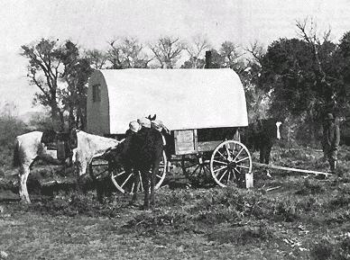
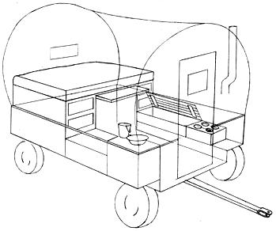
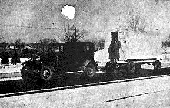
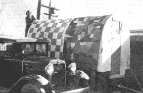

The temperature was forty degrees below zero at 6 a.m., and I knew it would be one of the coldest days of winter there in the high country of Wyoming. Fortunately, there was no wind with it and only seconds were needed to leap out of the warm bunk bed, pull pants and heavy flannel shirt over the wool "longies" I slept in, and start a quick fire in the sheep wagon stove.
This was an iron affair that stood to the left of the door facing out and occupied a space about two feet square and little more than two feet high. The six inch pipe was pushed through a sheet-metal guard in the canvas-covered roof and carried off the smoke.
The stove burned either wood, coal, or what was wryly called "Hoover coal." The depression years were on us and luckless President Hoover was bearing the blame for a great many minor hardships and economies. "Hoover coal" was the euphemism for dried cow manure and, when we could get them, the paper-dry pies were carefully gathered and hoarded in a sack tied on the rear corner of the wagon strictly for emergency use. Hoover coal made a quick hot fire but not everyone appreciated the pungent fragrance.
Lucky for me, the ranch boss had foreseen cold weather and knew I was in a sagebrush location where timber for firewood was scarce. He had sent me a sack of coal with the wagon tender on the last trip and I had it stashed away under the wagon with a bucket of lumps beside the stove. One lump in the small firebox lasted a long time and put out an amazing amount of heat, especially with the oven door open.
The water was frozen and had to be thawed on the stove before I could wash the sleep from my eyes and start breakfast. All canned goods and perishables were wrapped in newspapers and stored in cartons in the locker-benches on each side of the wagon.
By now the interior of the wagon was already comfortably warm. I sat on the bench beside the stove and surveyed my little kingdom while the water thawed.
The canvas-covered sheep wagon was roughly about seven feet wide by eight feet long. On the front end a door opened out of the middle and you stepped down onto the wagon tongue and thence to the ground. From the inside looking out, the stove was on the left of the door. On the right was a small wash stand with several wooden drawers for storage of linens, towels and socks. A bucket of water and washbasin were on the oil cloth covered top and a small mirror hung above the basin for shaving. Soap, toothbrush, razor and essentials rested on top of the stand when in location or were stowed in a drawer when moving.
Across three feet of the rear was the bunk bed. It was raised about four feet from the floor with a large wooden drawer fitted under each end. A wooden table slid in and out under the center, and below this was a large storage space for boots, bed-rolls and anything else that wouldn't fit elsewhere. There were no stools or chairs. Instead, between the bed and washstand on one side and the bed and stove on the other, was a bench sixteen inches high and twelve inches wide, with a hinged top and a capacious interior. Dried and packaged food supplies, canned goods, and the like were stored on the stove side and the washstand bench held extra bedding, townclothes and other miscellany. To get into bed, you slid the table out of the way, stepped up onto a bench and just rolled in, trying not to bump your head on the low ceiling.
In the rear wall of the wagon, just above the bed, was a window. about eight inches up and down and sixteen inches wide. This provided light in addition to the sixteen inch square window in the front door. The rear window was hinged on one side so that you could have fresh air at night and cross-ventilation in warm weather. It also was an ideal port-hole from which to take a pot shot at a marauding coyote and maybe knock over an unsuspecting rabbit or sage hen. If the herder was single the window was bare glass, but if he had a wife there would be a dainty little film of ruffled curtain at both the front and rear windows.
Every week or perhaps two weeks if the grazing was good, the wagon tender would come around with mail and supplies and would use his team to haul your wagon to the next location while you and the dogs slowly moved the flock of sheep in his wake. Ideal locations were near water and good grazing. The Powder River country has lots of small streams, many so narrow you can step across them, yet containing water enough for trout which lurk under overhanging grassy banks for a reasonably-easy-to-catch change of diet.
In winter there was always plenty of fresh meat since it could be frozen and kept for long periods. But in summer one quickly tired of salt pork, bacon or "summer sausage" and welcomed a mess of trout, or a tender half-grown rabbit or prairie chicken.
My introduction to the sheep wagon as a mobile home goes back to an age when I was just graduating from flour sack dresses to a boy's shirtwaist and short pants. There were no schools in the thinly populated sheep country and so during the nine months of winter and books, father was alone on the range while the rest of the family lived in Casper and we three boys went to school. But with spring vacation and the new baby, we were off to the ranch for a summer of following the "woolies."
Six of us in a sheep wagon no more than seven by eight feet! If there were hardships, mother never complained or told me about them. For three young hooligans ranging from five to ten years in age, it was wild, hilarious adventure from sunup-when we were fed and pushed out the door - until dark when we were hand-scrubbed in the same bucket of warm soapy water and tucked into the big bed roll on the hard ground underneath the sheep wagon. After we were bathed, baby sister's diapers were put to soak in the same bucket of water. When you had to carry water half a mile you saw to it that every drop got full mileage.
The secret of sheep wagon living can be easily summed up: Order and spic-and-span cleanliness. There were herders who turned their wagons into rat-holes and lived in a mess a hog would shun. The good herders kept everything tidy and ship-shape, eliminated non-essentials and followed Thoreau's dictum to "Simplify! Simplify!" With bed neatly made, floors, benches and oil-cloth inner wall scrubbed and spotless there was always room and a welcome for company.
Occasionally, neighboring couples could leave the dogs in charge for a spell and ride their saddle horses over for cake and coffee, music and a game of Hearts or OldMaid. Before radio, every herder had some kind of instrument . . . a fiddle, banjo, guitar, flute or mouth-harp . . . and, though most of them played by ear, it all sounded like music to us.
There was even dancing after a fashion when Uncle Jim and his bride showed up. The table would be shoved back under the bed, we boys would be up on top out of the way, baby sister snug in her basket, and mother bending over the stove to make sure the taffy syrup didn't scorch.
Pa would tune a few notes on the fiddle and launch into an Irish reel that would tingle from toes to ears. Then Jim would tap out a jig step that set the floor boards rattling and the dogs howling, while Jessie - with hands on hips - replied in kind.
By the time I was old enough to have my own wagon, radio was coming in and with crystal sets and ear `p hones we could sometimes get high-brow music and some of the big dance bands. Progress!
Building the modern sheepwagon. Note rubber tired wheels inset under wagon and five bows over top. The rope line down the center served no purpose except to hold the bows until the canvas was stretched. Patchwork quilts and wool batts were used for insulation over an inner wall of oil cloth. No stove pipe was necessary because a butane gas plate was used for cooking.
The wagon on the road (above) behind an antique 7930 model A Ford . . . for "old time sake."
After a career in the big cities, I had been talking so much about the sheepwagons of my youth that my wife finally agreed to let me build one and try it out. They are still in use in some parts of the old west: Idaho, Utah, Nevada, the Dakotas, Wyoming and Montana, and no doubt modern plans are available from the western state agricultural colleges. But anyone with a minimum of tools, imagination and skill can build one. The old horse-drawn running gear is now replaced by a rubber-tired farm wagon. But hardware supply houses in the west still stock the compact sheepwagon stoves and the bent hickory bows that hold the canvas and tent and awning companies still have the patterns and skill to sew the coverings.
There were three layers of covering: a good heavy canvas on the outside; then a layer of coarse wool blanket for insulation; and a fancy-patterned oil-cloth inner lining. The last might be replaced by plastic today.
It was this triple-ply covering that made the sheep wagon so easily heated, snug and comfortable in subzero weather. In summer, too, the insulated ceiling plus the cross-ventilation from rear-window through the door kept the interior comfortably shaded and cool in the high altitude areas of the west.
When I built my last sheep wagon, the rubber-tired running gear cost me a hundred dollars in used, but good condition. The rest of the wagon cost another hundred, and for two hundred dollars we had a comfortable trailer and mobile home. With an ancient (1930) Model A car we traveled from Casper, Wyoming to San Diego - camping and sightseeing along the way - and with never a hitch or difficulty although in deference to the car, I chose the easiest route: Over Raton Pass and south to Las Cruces, then west through Tucson and Yuma and over the Lagunas.
In San Diego I lifted the wagon body onto blocks and sold the running gear at a farm auction. We lived in the sheep wagon body while our home was building and then the grandchildren inherited it as a playhouse.
|
 |
 |
 |
|
 |
|
|